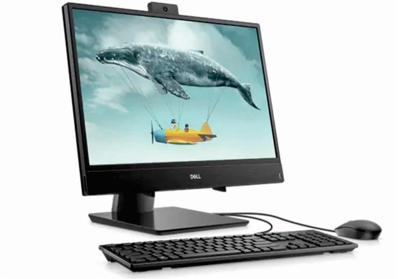

Especificações técnicas

Processador
Intel® Pentium® Gold 5405U (2.3 GHz, cache de 2MB, dual-core)
Sistema operacional
Ubuntu Linux 18.04
- R$ 151,00
Windows 10 Pro Single Language, de 64 bits - em Português (Brasil)
+ R$ 368,00
Windows 10 Home Single Language, 64 bits - em Português (Brasil)
Incluído no preço
Placa de vídeo
Ajude-me a escolher
Placa de vídeo integrada Intel® UHD Graphics 620 com memória gráfica compartilhada
Memória RAM
Memória de 4GB (1x4GB), DDR4, 2133MHz; Expansível até 16GB (2 slots soDIMM, 1 slot livre)
Armazenamento
SSD de 128GB PCIe NVMe M.2
Monitor
Tela Full HD IPS de 21,5" (1920 x 1080) com borda fina
Teclado
Teclado multimídia preto Dell KB216 - em Português (Brasil) (padrão ABNT2)
Incluído no preço
Teclado e mouse preto sem fio Dell KM636 - em Português (Brasil) (padrão ABNT2)
+ R$ 54,00
Tela Inicial